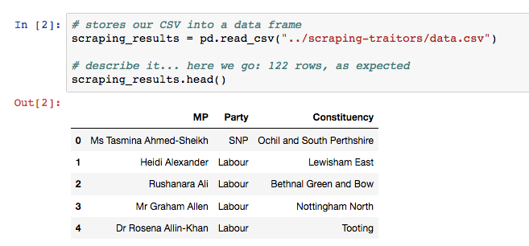

# a variable
foo = 'bar'
# a list
aList = [1,2,'lol']
# an if statement
if 'lol' in aList:
print('element found')
# a for loop
for element in foo:
if 'lol' is element:
print element
# > 'lol'
url = 'https://order-order.com/2017/02/08/named-122-mps-voted-brexit/'
response = requests.get(url)
# parses HTML
html = response.content
# magic method
soup = BeautifulSoup(html, 'lxml')
# now we can work
soup.findAll('html elements')
"name (party - constituency)"
eg
Martyn Day (Scottish National Party – Linlithgow and East Falkirk) Maria Eagle (Labour – Garston and Halewood)
This is the key issue with web scraping: dirty data!

Now that we've got our 122 names we want to see who betrayed their constituency: jump to `spotting-traitors`